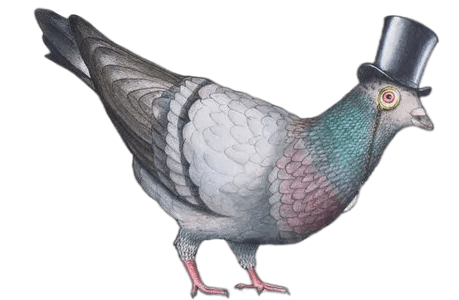

Театр Часы Марли

Главная
О театре
Афиша и услуги
Контакты
Вакансии
Сложности с получением «Пушкинской карты» или приобретением билетов? Знаете, как улучшить работу учреждений культуры?
Напишите — решим!
Написать